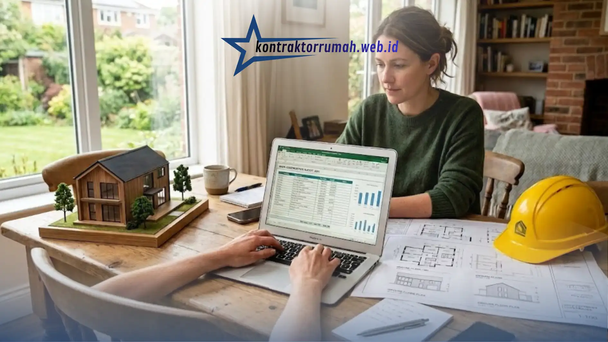

Rencana Anggaran Biaya atau RAB adalah dokumen yang berisi rincian perkiraan biaya pembangunan rumah, mulai dari pekerjaan persiapan hingga finishing. Menyusun RAB secara mandiri menggunakan format Excel dapat membantu pemilik rumah memahami alokasi biaya secara transparan sebelum berdiskusi dengan kontraktor.
Poin Penting
- RAB disusun berdasarkan volume pekerjaan dikalikan harga satuan setiap item.
- Format Excel memudahkan perhitungan otomatis dan penyesuaian saat ada perubahan spesifikasi.
- Pekerjaan dikelompokkan per kategori: persiapan, struktur, arsitektur, dan mekanikal-elektrikal.
- Harga satuan sebaiknya disesuaikan dengan kondisi harga material dan upah di wilayah masing-masing.
- Rekapitulasi akhir menjadi acuan total biaya sebelum negosiasi dengan kontraktor.
Apa Itu RAB dan Mengapa Penting Disusun Sejak Awal?
RAB adalah dokumen perhitungan biaya yang merinci setiap item pekerjaan konstruksi beserta volume dan harga satuannya.
Dokumen ini penting disusun sejak awal karena menjadi dasar negosiasi dengan kontraktor, alat kontrol pengeluaran selama proses pembangunan, serta acuan untuk mengajukan pembiayaan ke bank apabila menggunakan skema KPR atau pinjaman konstruksi.
Tanpa RAB yang jelas, pemilik rumah berisiko mengalami pembengkakan biaya di tengah proses pembangunan karena tidak ada patokan awal yang bisa dijadikan pembanding.
Komponen Utama dalam Struktur RAB
Secara umum, RAB rumah tinggal terdiri dari beberapa kelompok pekerjaan utama berikut:
- Pekerjaan persiapan, meliputi pembersihan lahan, pengukuran, dan pemasangan bouwplank.
- Pekerjaan struktur, meliputi pondasi, kolom, balok, dan pelat lantai.
- Pekerjaan arsitektur, meliputi dinding, kusen, atap, lantai, plafon, dan pengecatan.
- Pekerjaan mekanikal dan elektrikal (ME), meliputi instalasi listrik, air bersih, dan sanitasi.
- Pekerjaan finishing, meliputi sanitary, kunci, dan aksesori akhir bangunan.
Setiap kelompok ini nantinya dipecah lagi menjadi item-item pekerjaan yang lebih detail dalam lembar kerja Excel.
Bagaimana Cara Menyusun RAB di Excel Langkah demi Langkah?
Berikut langkah umum menyusun RAB rumah tinggal menggunakan Excel:
- Buat kolom dasar. Susun kolom berisi nomor item, uraian pekerjaan, satuan, volume, harga satuan, dan jumlah harga.
- Kelompokkan pekerjaan per kategori. Pisahkan baris berdasarkan kategori seperti persiapan, struktur, arsitektur, dan ME agar mudah dibaca.
- Hitung volume setiap pekerjaan. Volume dihitung berdasarkan gambar kerja, misalnya luas dinding dalam meter persegi atau panjang pondasi dalam meter lari.
- Masukkan harga satuan pekerjaan. Harga ini bisa mengacu pada Analisa Harga Satuan Pekerjaan (AHSP) yang berlaku di wilayah setempat, atau hasil survei harga material dan upah tukang terkini.
- Gunakan rumus perkalian otomatis. Kolom jumlah harga dihitung dengan rumus volume dikalikan harga satuan, misalnya =D2*E2, sehingga total akan otomatis diperbarui jika volume atau harga satuan diubah.
- Buat subtotal per kategori. Gunakan rumus SUM untuk menjumlahkan setiap kelompok pekerjaan.
- Susun rekapitulasi akhir. Jumlahkan seluruh subtotal kategori menjadi total biaya konstruksi, lalu tambahkan biaya cadangan atau kontingensi sesuai kebutuhan.

Cara Menghitung Volume Pekerjaan dengan Akurat
Volume pekerjaan dihitung berdasarkan gambar arsitektur dan struktur yang sudah disepakati. Sebagai contoh, volume pekerjaan dinding dihitung dari luas total dinding dikurangi luas bukaan pintu dan jendela, sedangkan volume pekerjaan lantai dihitung dari luas total ruangan yang akan dipasangi penutup lantai.
Untuk pekerjaan pondasi, volume umumnya dihitung dalam satuan meter kubik berdasarkan panjang, lebar, dan kedalaman galian sesuai spesifikasi struktur. Ketelitian pada tahap ini penting karena kesalahan volume akan berdampak langsung pada akurasi total biaya.
Menentukan Harga Satuan yang Realistis
Harga satuan pekerjaan dapat bervariasi tergantung wilayah, tingkat kesulitan pekerjaan, serta kualitas material yang dipilih.
Untuk mendapatkan harga satuan yang realistis, pemilik rumah dapat membandingkan harga dari beberapa toko material sekaligus, merujuk pada standar AHSP yang diterbitkan pemerintah daerah setempat, atau berkonsultasi langsung dengan kontraktor maupun tukang berpengalaman di wilayah tersebut.
Penting untuk memperbarui harga satuan secara berkala karena harga material dan upah tenaga kerja dapat berubah dari waktu ke waktu.
Tips Agar Perhitungan RAB Lebih Akurat
Beberapa tips yang dapat diterapkan agar hasil RAB lebih mendekati kondisi nyata di lapangan antara lain menambahkan biaya cadangan sekitar lima hingga sepuluh persen dari total biaya untuk mengantisipasi perubahan spesifikasi atau kenaikan harga material, memisahkan biaya material dan upah kerja agar lebih mudah dikontrol, serta melakukan peninjauan ulang RAB setiap kali ada perubahan desain.
Selain itu, sebaiknya sertakan pula sheet terpisah untuk daftar harga material terkini agar perhitungan bisa diperbarui dengan cepat tanpa mengubah struktur utama RAB.
Kesalahan Umum saat Menghitung RAB
Kesalahan yang sering terjadi antara lain lupa memasukkan pekerjaan pendukung seperti pembersihan akhir dan mobilisasi alat, menghitung volume tanpa memperhitungkan bukaan pintu dan jendela, menggunakan harga satuan yang sudah usang, serta tidak menyediakan dana cadangan sehingga anggaran mudah membengkak saat terjadi perubahan di lapangan.
Menyusun RAB rumah tinggal dengan format Excel memungkinkan pemilik rumah menghitung estimasi biaya secara rinci dan transparan. Kuncinya terletak pada ketelitian menghitung volume pekerjaan, penggunaan harga satuan yang realistis dan terkini, serta pengelompokan pekerjaan yang rapi per kategori. RAB yang disusun dengan baik akan menjadi acuan penting saat berdiskusi dan bernegosiasi dengan kontraktor.